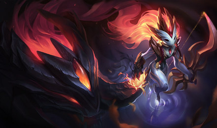
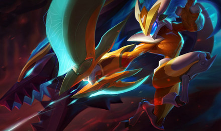
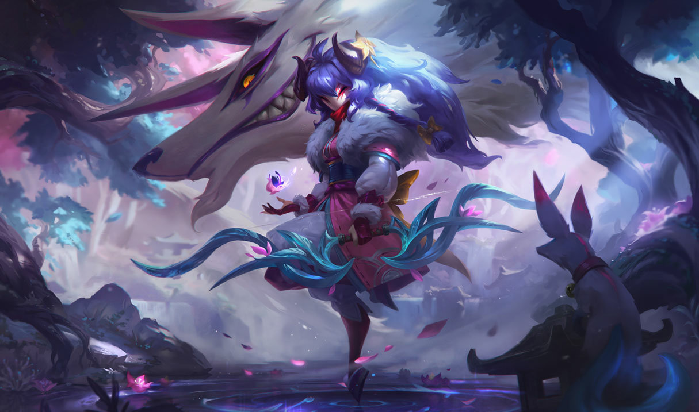
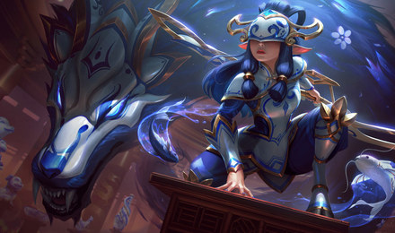
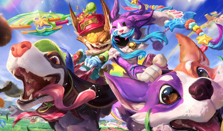
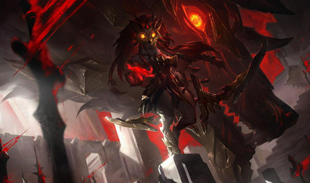
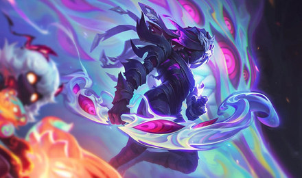

Los Cazadores Eternos
Jungla · Tirador · no tiene nación: es un dios
Separados para siempre, pero juntos siempre.
Taiwán · nivel de invocador 1 773 · maestría 1 370

Fuego Sombrío 1350 RP
Supergalácticos 1350 RP
Flor Espiritual 1350 RP
de Porcelana 1350 RP
Can y Cordero 1350 RP
Elegido del Lobo 1350 RP
Pandemonium 1350 RP